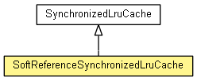

org.waarp.common.lru
Class SoftReferenceSynchronizedLruCache<K,V>
java.lang.Object
 org.waarp.common.lru.AbstractLruCache<K,V>
org.waarp.common.lru.SynchronizedLruCache<K,V>
org.waarp.common.lru.SoftReferenceSynchronizedLruCache<K,V>
org.waarp.common.lru.AbstractLruCache<K,V>
org.waarp.common.lru.SynchronizedLruCache<K,V>
org.waarp.common.lru.SoftReferenceSynchronizedLruCache<K,V>
- All Implemented Interfaces:
- InterfaceLruCache<K,V>
public class SoftReferenceSynchronizedLruCache<K,V>
- extends SynchronizedLruCache<K,V>

Modification of SynchronizedLruCache which uses SoftReference to store values
- Author:
- Frederic Bregier, Damian Momot
| Methods inherited from class java.lang.Object |
clone, equals, finalize, getClass, hashCode, notify, notifyAll, toString, wait, wait, wait |
SoftReferenceSynchronizedLruCache
public SoftReferenceSynchronizedLruCache(int capacity,
long ttl,
int initialCapacity,
float loadFactor)
SoftReferenceSynchronizedLruCache
public SoftReferenceSynchronizedLruCache(int capacity,
long ttl,
int initialCapacity)
SoftReferenceSynchronizedLruCache
public SoftReferenceSynchronizedLruCache(int capacity,
long ttl)
createEntry
protected InterfaceLruCacheEntry<V> createEntry(V value,
long ttl)
- Description copied from class:
AbstractLruCache
- Creates new LruCacheEntry.
It can be used to change implementation of LruCacheEntry
- Overrides:
createEntry in class AbstractLruCache<K,V>
- Returns:
- LruCacheEntry
Copyright © 2009-2013 Waarp. All Rights Reserved.